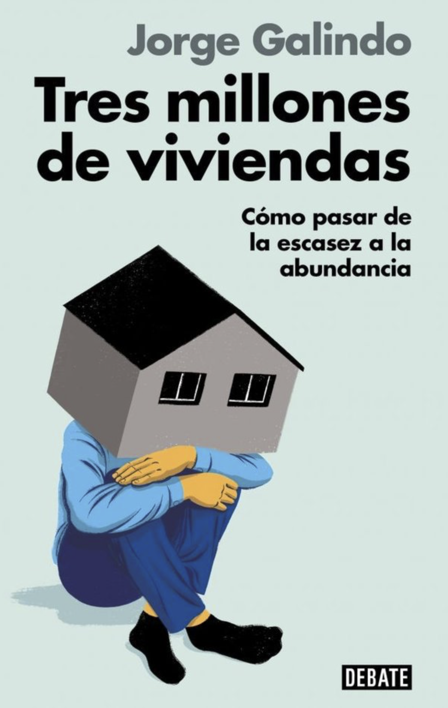

Hola :)
Busco ideas sólidas y viables para el progreso. Trabajo convirtiendo conocimiento y datos rigurosos en criterio.
Dirijo EsadeEcPol. He publicado Tres millones de viviendas (Debate). Escribo en El País.

el libro
Tres millones de viviendas
Cómo pasar de la escasez a la abundancia.
- Un diagnóstico completo: los datos que vinculan la falta de viviendas, la demanda creciente y los precios disparados.
- Los responsables inesperados: quién se está quedando con los pocos pisos que hay.
- La parálisis: por qué ni el mercado ni el estado responden a los incentivos de precios altos y demandas ciudadanas.
- Las trampas del sistema: cómo nos bloqueamos a nosotros mismos.
- Las soluciones que pueden funcionar: políticas concretas para salir de la escasez y desbloquear las oportunidades.
- Cómo activarlas para que sean viables y justas, de manera que las nuevas viviendas vayan para quien las necesita.
esadeecpol
Dirijo EsadeEcPol.
Empecé como director adjunto, asumiendo la dirección en enero de 2026. Fundamos el Centro de Políticas Económicas a inicios de 2020 para convertirnos en referentes sobre políticas públicas basadas en evidencia. Y en ello estamos.
Equipo, papers, notas y eventos.
escribir
Lo último que he escrito.
en directo
eventos
en medios · destacados
quién
Doctor en sociología aplicada por la Universidad de Ginebra (con financiación de la Swiss National Science Foundation). Doble MPP en Erasmus University Rotterdam y Central European University, con beca Erasmus Mundus de la Comisión Europea.
Soy analista externo de riesgo político para Eurasia Group desde 2014. He escrito capítulos de libros y participado en redes de expertos y eventos con la OIT, la Generalitat de Catalunya, la Fundación ICO, la Fundación Carolina, la FEPS, la Friedrich Naumann Foundation y la Fundación Gabo, entre otras.
politikon
Cofundé Politikon en 2010, colectivo de análisis político y de políticas públicas. Sacamos dos libros colectivos en Debate:
- La urna rota 2014
- El muro invisible 2017
// más libros
Además, con el equipo y la red de colaboradores de EsadeEcPol publicamos otro que para mí continúa con el espíritu de los anteriores, en Deusto (Planeta):
- Un país posible 2023
investigación académica
Hidalgo-Pérez, M., Galindo, J., Collado, N., & Mateo, R. (2024). The Iberian exception: Estimating the impact of a cap on gas prices for electricity generation on consumer prices and market dynamics. Energy Policy, 188.